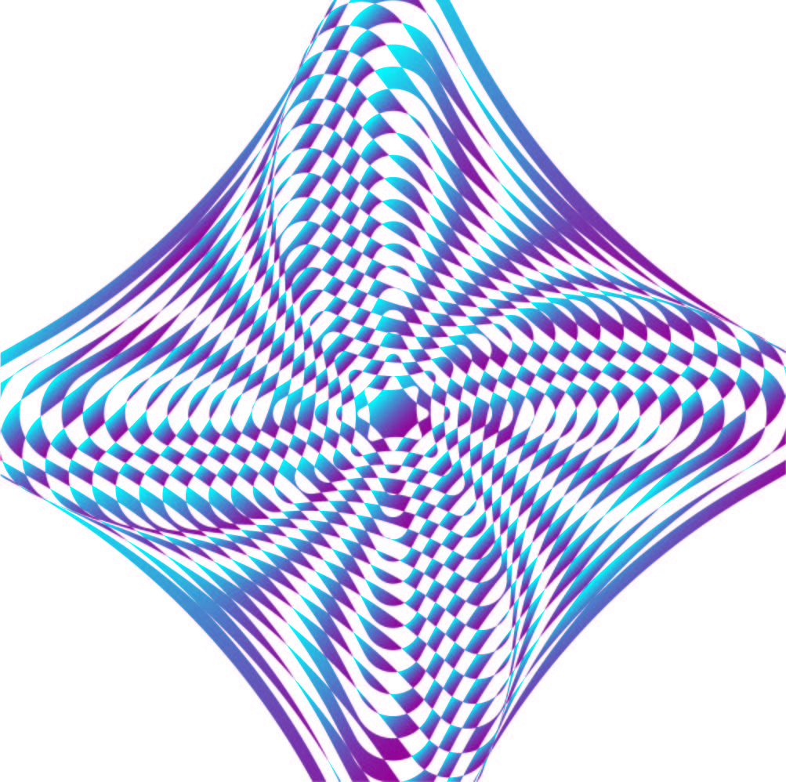

My Artworks
Spiral 2
I'm interested in the shape of a spiral as it connects me to a different realm. I find the spiral shape very different and unique from others for some reason. This particular piece is my square spiral.
- Jan 2020
Spiral 3
This is the last of my spiral series. It is my circular spiral. The circle and spiral together form this depth illusion. From inner to outer side the spiral changes it's color and size.
- Jan 2020